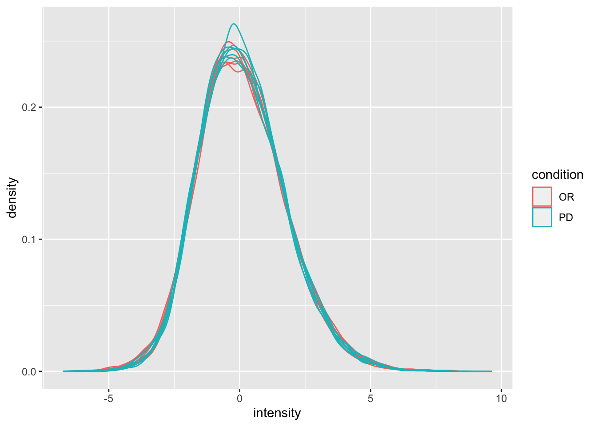
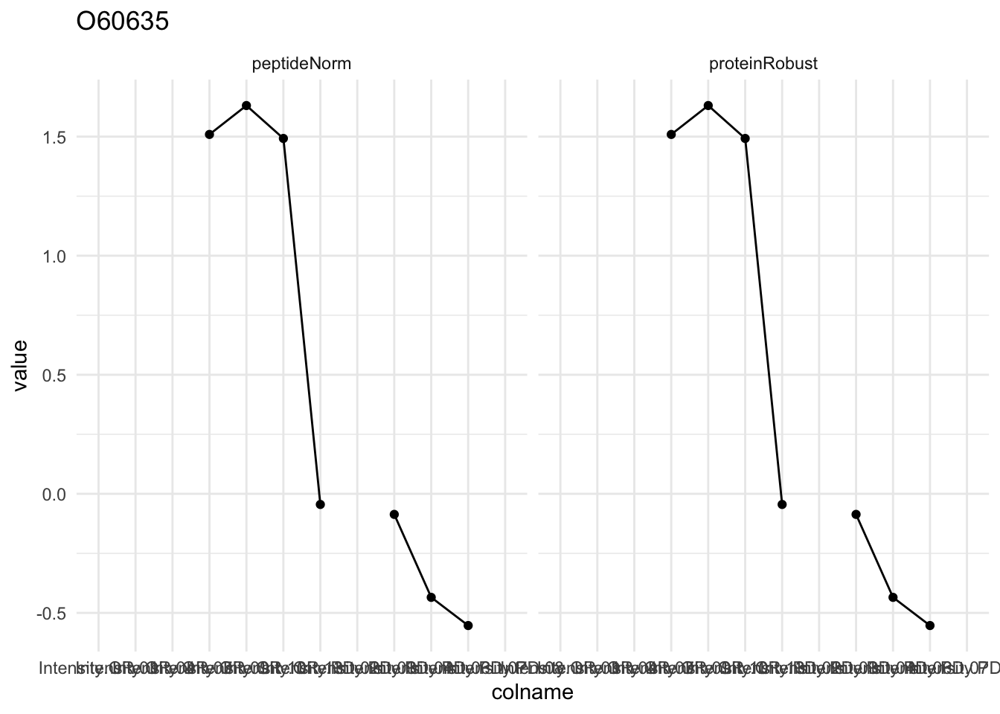

Background
Eighteen Estrogen Receptor Positive Breast cancer tissues from from patients treated with tamoxifen upon recurrence have been assessed in a proteomics study. Nine patients had a good outcome (or) and the other nine had a poor outcome (pd). The proteomes have been assessed using an LTQ-Orbitrap and the thermo output .RAW files were searched with MaxQuant (version 1.4.1.2) against the human proteome database (FASTA version 2012-09, human canonical proteome).
Data
We first import the peptides.txt file. This is the file that contains your peptide-level intensities. For a MaxQuant search [6], this peptides.txt file can be found by default in the “path_to_raw_files/combined/txt/” folder from the MaxQuant output, with “path_to_raw_files” the folder where raw files were saved. In this tutorial, we will use a MaxQuant peptides file from MaxQuant that can be found in the data tree of the SGA2020 github repository https://github.com/statOmics/SGA2020/tree/data/quantification/cancer .
To import the data we use the QFeatures package.
We generate the object peptideRawFile with the path to the peptideRaws.txt file. Using the grepEcols function, we find the columns that contain the expression data of the peptideRaws in the peptideRaws.txt file.
library(tidyverse)
library(limma)
library(QFeatures)
library(msqrob2)
library(plotly)
peptidesFile <- "https://raw.githubusercontent.com/statOmics/SGA2020/data/quantification/cancer/peptides6vs6.txt"
ecols <- grep(
"Intensity\\.",
names(read.delim(peptidesFile))
)
pe <- readQFeatures(
table = peptidesFile,
fnames = 1,
ecol = ecols,
name = "peptideRaw", sep="\t")
pe
## An instance of class QFeatures containing 1 assays:
## [1] peptideRaw: SummarizedExperiment with 34205 rows and 12 columns
## class: SummarizedExperiment
## dim: 34205 12
## metadata(0):
## assays(1): ''
## rownames(34205): AAAAAAAAAAAAAAAGAGAGAK AAAAAAAAAAGAAGGR ...
## YYWGGQYTWDMAK YYYDGKDYIEFNK
## rowData names(38): Sequence Proteins ... Best.MS.MS
## Oxidation..M..site.IDs
## colnames(12): Intensity.OR.01 Intensity.OR.04 ... Intensity.PD.07
## Intensity.PD.08
## colData names(0):
We will make use from data wrangling functionalities from the tidyverse package. The %>% operator allows us to pipe the output of one function to the next function.
colData(pe)$outcome <- substr(
colnames(pe[["peptideRaw"]]),
11,
12) %>%
unlist %>%
as.factor
We calculate how many non zero intensities we have per peptide and this will be useful for filtering.
rowData(pe[["peptideRaw"]])$nNonZero <- rowSums(assay(pe[["peptideRaw"]]) > 0)
Peptides with zero intensities are missing peptides and should be represent with a NA value rather than 0.
pe <- zeroIsNA(pe, "peptideRaw") # convert 0 to NA
Data exploration
46% of all peptide intensities are missing and for some peptides we do not even measure a signal in any sample.
Preprocessing
This section preforms standard preprocessing for the peptide data. This include log transformation, filtering and summarisation of the data.
Filtering
Handling overlapping protein groups
In our approach a peptide can map to multiple proteins, as long as there is none of these proteins present in a smaller subgroup.
pe <- filterFeatures(pe, ~ Proteins %in% smallestUniqueGroups(rowData(pe[["peptideLog"]])$Proteins))
Remove reverse sequences (decoys) and contaminants
We now remove the contaminants, peptides that map to decoy sequences, and proteins which were only identified by peptides with modifications.
pe <- filterFeatures(pe,~Reverse != "+")
pe <- filterFeatures(pe,~ Contaminant != "+")
Remove peptides of proteins that were only identified with modified peptides
I will skip this step for the moment. Large protein groups file needed for this.
Drop peptides that were only identified in one sample
We keep peptides that were observed at last twice.
pe <- filterFeatures(pe,~nNonZero >= 2)
nrow(pe[["peptideLog"]])
## [1] 25452
We keep 25452 peptides after filtering.
Explore normalized data
Upon the normalisation the density curves are nicely registered
pe[["peptideNorm"]] %>%
assay %>%
as.data.frame() %>%
gather(sample, intensity) %>%
mutate(condition = colData(pe)[sample,"outcome"]) %>%
ggplot(aes(x = intensity,group = sample,color = condition)) +
geom_density()
## Warning: Removed 108107 rows containing non-finite values (stat_density).

We can visualize our data using a Multi Dimensional Scaling plot, eg. as provided by the limma package.
limma::plotMDS(assay(pe[["peptideNorm"]]), col = as.numeric(colData(pe)$outcome))
The first axis in the plot is showing the leading log fold changes (differences on the log scale) between the samples.
Summarization to protein level
We use robust summarization in aggregateFeatures. This is the default workflow of aggregateFeatures so you do not have to specifiy the argument fun.
pe <- aggregateFeatures(pe,
i = "peptideNorm",
fcol = "Proteins",
na.rm = TRUE,
name = "proteinRobust")
## Your quantitative and row data contain missing values. Please read the
## relevant section(s) in the aggregateFeatures manual page regarding the
## effects of missing values on data aggregation.
plotMDS(assay(pe[["proteinRobust"]]), col = as.numeric(colData(pe)$outcome))
Data Analysis
Estimation
We model the protein level expression values using msqrob. By default msqrob2 estimates the model parameters using robust regression.
pe <- msqrob(object = pe, i = "proteinRobust", formula = ~outcome)
Inference
First, we extract the parameter names of the model.
getCoef(rowData(pe[["proteinRobust"]])$msqrobModels[[1]])
## (Intercept) outcomePD
## -1.1067176 0.5721013
Contrast?
library(ExploreModelMatrix)
VisualizeDesign(colData(pe),~outcome)$plotlist[[1]]
The mean log2 expression for samples from outcome B is ‘(Intercept)+outcomePD’. Hence, the average log2 fold change between outcome b and outcome a is modelled using the parameter ‘outcomePD’. Thus, we assess the contrast ‘outcomePD=0’ with our statistical test.
L <- makeContrast("outcomePD = 0", parameterNames = c("outcomePD"))
pe <- hypothesisTest(object = pe, i = "proteinRobust", contrast = L)
Plots
Volcano-plot
volcano <- ggplot(rowData(pe[["proteinRobust"]])$outcomePD,
aes(x = logFC, y = -log10(pval), color = adjPval < 0.05)) +
geom_point(cex = 2.5) +
scale_color_manual(values = alpha(c("black", "red"), 0.5)) + theme_minimal()
volcano
Heatmap
We first select the names of the proteins that were declared signficant.
sigNames <- rowData(pe[["proteinRobust"]])$outcomePD %>%
rownames_to_column("proteinRobust") %>%
filter(adjPval<0.05) %>%
pull(proteinRobust)
heatmap(assay(pe[["proteinRobust"]])[sigNames, ])
There are 36 proteins significantly differentially expressed at the 5% FDR level.
Detail plots
We first extract the normalized peptideRaw expression values for a particular protein.
for (protName in sigNames[1:5])
{
pePlot <- pe[protName, , c("peptideNorm","proteinRobust")]
pePlotDf <- data.frame(longFormat(pePlot))
pePlotDf$assay <- factor(pePlotDf$assay,
levels = c("peptideNorm", "proteinRobust"))
pePlotDf$outcome <- as.factor(colData(pePlot)[pePlotDf$colname, "outcome"])
# plotting
p1 <- ggplot(data = pePlotDf,
aes(x = colname, y = value, group = rowname)) +
geom_line() + geom_point() + theme_minimal() +
facet_grid(~assay) + ggtitle(protName)
print(p1)
# plotting 2
p2 <- ggplot(pePlotDf, aes(x = colname, y = value, fill = outcome)) +
geom_boxplot(outlier.shape = NA) + geom_point(position = position_jitter(width = .1),
aes(shape = rowname)) +
scale_shape_manual(values = 1:nrow(pePlotDf)) +
labs(title = protName, x = "sample", y = "peptide intensity (log2)") + theme_minimal()
facet_grid(~assay)
print(p2)
}

LS0tCnRpdGxlOiAiUHJvdGVvbWljcyBkYXRhIGFuYWx5c2lzOiBjYW5jZXIgZXhhbXBsZSA2eDYiCmF1dGhvcjogIkxpZXZlbiBDbGVtZW50IgpkYXRlOiAic3RhdE9taWNzLCBHaGVudCBVbml2ZXJzaXR5IChodHRwczovL3N0YXRvbWljcy5naXRodWIuaW8pIgpvdXRwdXQ6CiAgICBodG1sX2RvY3VtZW50OgogICAgICBjb2RlX2Rvd25sb2FkOiB0cnVlCiAgICAgIHRoZW1lOiBjb3NtbwogICAgICB0b2M6IHRydWUKICAgICAgdG9jX2Zsb2F0OiB0cnVlCiAgICAgIGhpZ2hsaWdodDogdGFuZ28KICAgICAgbnVtYmVyX3NlY3Rpb25zOiB0cnVlCi0tLQoKIyBCYWNrZ3JvdW5kCkVpZ2h0ZWVuIEVzdHJvZ2VuIFJlY2VwdG9yIFBvc2l0aXZlIEJyZWFzdCBjYW5jZXIgdGlzc3VlcyBmcm9tIGZyb20gcGF0aWVudHMgdHJlYXRlZCB3aXRoIHRhbW94aWZlbiB1cG9uIHJlY3VycmVuY2UgaGF2ZSBiZWVuIGFzc2Vzc2VkIGluIGEgcHJvdGVvbWljcyBzdHVkeS4gTmluZSBwYXRpZW50cyBoYWQgYSBnb29kIG91dGNvbWUgKG9yKSBhbmQgdGhlIG90aGVyIG5pbmUgaGFkIGEgcG9vciBvdXRjb21lIChwZCkuClRoZSBwcm90ZW9tZXMgaGF2ZSBiZWVuIGFzc2Vzc2VkIHVzaW5nIGFuIExUUS1PcmJpdHJhcCAgYW5kIHRoZSB0aGVybW8gb3V0cHV0IC5SQVcgZmlsZXMgd2VyZSBzZWFyY2hlZCB3aXRoIE1heFF1YW50ICh2ZXJzaW9uIDEuNC4xLjIpIGFnYWluc3QgdGhlIGh1bWFuIHByb3Rlb21lIGRhdGFiYXNlIChGQVNUQSB2ZXJzaW9uIDIwMTItMDksIGh1bWFuIGNhbm9uaWNhbCBwcm90ZW9tZSkuCgojIERhdGEKCldlIGZpcnN0IGltcG9ydCB0aGUgcGVwdGlkZXMudHh0IGZpbGUuIFRoaXMgaXMgdGhlIGZpbGUgdGhhdCBjb250YWlucyB5b3VyIHBlcHRpZGUtbGV2ZWwgaW50ZW5zaXRpZXMuIEZvciBhIE1heFF1YW50IHNlYXJjaCBbNl0sIHRoaXMgcGVwdGlkZXMudHh0IGZpbGUgY2FuIGJlIGZvdW5kIGJ5IGRlZmF1bHQgaW4gdGhlICJwYXRoX3RvX3Jhd19maWxlcy9jb21iaW5lZC90eHQvIiBmb2xkZXIgZnJvbSB0aGUgTWF4UXVhbnQgb3V0cHV0LCB3aXRoICJwYXRoX3RvX3Jhd19maWxlcyIgdGhlIGZvbGRlciB3aGVyZSByYXcgZmlsZXMgd2VyZSBzYXZlZC4gSW4gdGhpcyB0dXRvcmlhbCwgd2Ugd2lsbCB1c2UgYSBNYXhRdWFudCBwZXB0aWRlcyBmaWxlIGZyb20gTWF4UXVhbnQgdGhhdCBjYW4gYmUgZm91bmQgaW4gdGhlIGRhdGEgdHJlZSBvZiB0aGUgU0dBMjAyMCBnaXRodWIgcmVwb3NpdG9yeSBodHRwczovL2dpdGh1Yi5jb20vc3RhdE9taWNzL1NHQTIwMjAvdHJlZS9kYXRhL3F1YW50aWZpY2F0aW9uL2NhbmNlciAuCgpUbyBpbXBvcnQgdGhlIGRhdGEgd2UgdXNlIHRoZSBgUUZlYXR1cmVzYCBwYWNrYWdlLgoKV2UgZ2VuZXJhdGUgdGhlIG9iamVjdCBwZXB0aWRlUmF3RmlsZSB3aXRoIHRoZSBwYXRoIHRvIHRoZSBwZXB0aWRlUmF3cy50eHQgZmlsZS4KVXNpbmcgdGhlIGBncmVwRWNvbHNgIGZ1bmN0aW9uLCB3ZSBmaW5kIHRoZSBjb2x1bW5zIHRoYXQgY29udGFpbiB0aGUgZXhwcmVzc2lvbgpkYXRhIG9mIHRoZSBwZXB0aWRlUmF3cyBpbiB0aGUgcGVwdGlkZVJhd3MudHh0IGZpbGUuCgpgYGB7ciwgd2FybmluZz1GQUxTRSwgbWVzc2FnZT1GQUxTRX0KbGlicmFyeSh0aWR5dmVyc2UpCmxpYnJhcnkobGltbWEpCmxpYnJhcnkoUUZlYXR1cmVzKQpsaWJyYXJ5KG1zcXJvYjIpCmxpYnJhcnkocGxvdGx5KQoKcGVwdGlkZXNGaWxlIDwtICJodHRwczovL3Jhdy5naXRodWJ1c2VyY29udGVudC5jb20vc3RhdE9taWNzL1NHQTIwMjAvZGF0YS9xdWFudGlmaWNhdGlvbi9jYW5jZXIvcGVwdGlkZXM2dnM2LnR4dCIKCmVjb2xzIDwtIGdyZXAoCiAgIkludGVuc2l0eVxcLiIsIAogIG5hbWVzKHJlYWQuZGVsaW0ocGVwdGlkZXNGaWxlKSkKICApCgpwZSA8LSByZWFkUUZlYXR1cmVzKAogIHRhYmxlID0gcGVwdGlkZXNGaWxlLAogIGZuYW1lcyA9IDEsCiAgZWNvbCA9IGVjb2xzLAogIG5hbWUgPSAicGVwdGlkZVJhdyIsIHNlcD0iXHQiKQoKcGUKcGVbWyJwZXB0aWRlUmF3Il1dCmBgYAoKV2Ugd2lsbCBtYWtlIHVzZSBmcm9tIGRhdGEgd3JhbmdsaW5nIGZ1bmN0aW9uYWxpdGllcyBmcm9tIHRoZSB0aWR5dmVyc2UgcGFja2FnZS4KVGhlICU+JSBvcGVyYXRvciBhbGxvd3MgdXMgdG8gcGlwZSB0aGUgb3V0cHV0IG9mIG9uZSBmdW5jdGlvbiB0byB0aGUgbmV4dCBmdW5jdGlvbi4KCmBgYHtyfQpjb2xEYXRhKHBlKSRvdXRjb21lIDwtIHN1YnN0cigKICBjb2xuYW1lcyhwZVtbInBlcHRpZGVSYXciXV0pLAogIDExLAogIDEyKSAlPiUKICB1bmxpc3QgJT4lICAKICBhcy5mYWN0b3IKYGBgCgoKV2UgY2FsY3VsYXRlIGhvdyBtYW55IG5vbiB6ZXJvIGludGVuc2l0aWVzIHdlIGhhdmUgcGVyIHBlcHRpZGUgYW5kIHRoaXMKd2lsbCBiZSB1c2VmdWwgZm9yIGZpbHRlcmluZy4KCmBgYHtyfQpyb3dEYXRhKHBlW1sicGVwdGlkZVJhdyJdXSkkbk5vblplcm8gPC0gcm93U3Vtcyhhc3NheShwZVtbInBlcHRpZGVSYXciXV0pID4gMCkKYGBgCgoKUGVwdGlkZXMgd2l0aCB6ZXJvIGludGVuc2l0aWVzIGFyZSBtaXNzaW5nIHBlcHRpZGVzIGFuZCBzaG91bGQgYmUgcmVwcmVzZW50CndpdGggYSBgTkFgIHZhbHVlIHJhdGhlciB0aGFuIGAwYC4KYGBge3J9CnBlIDwtIHplcm9Jc05BKHBlLCAicGVwdGlkZVJhdyIpICMgY29udmVydCAwIHRvIE5BCmBgYAoKCiMjIERhdGEgZXhwbG9yYXRpb24KCgpgciBmb3JtYXQobWVhbihpcy5uYShhc3NheShwZVtbInBlcHRpZGVSYXciXV0pKSkqMTAwLGRpZ2l0cz0yKWAlIG9mIGFsbCBwZXB0aWRlCmludGVuc2l0aWVzIGFyZSBtaXNzaW5nIGFuZCBmb3Igc29tZSBwZXB0aWRlcyB3ZSBkbyBub3QgZXZlbiBtZWFzdXJlIGEgc2lnbmFsCmluIGFueSBzYW1wbGUuCgojIFByZXByb2Nlc3NpbmcKClRoaXMgc2VjdGlvbiBwcmVmb3JtcyBzdGFuZGFyZCBwcmVwcm9jZXNzaW5nIGZvciB0aGUgcGVwdGlkZSBkYXRhLiBUaGlzCmluY2x1ZGUgbG9nIHRyYW5zZm9ybWF0aW9uLCBmaWx0ZXJpbmcgYW5kIHN1bW1hcmlzYXRpb24gb2YgdGhlIGRhdGEuCgojIyBMb2cgdHJhbnNmb3JtIHRoZSBkYXRhCgpgYGB7cn0KcGUgPC0gbG9nVHJhbnNmb3JtKHBlLCBiYXNlID0gMiwgaSA9ICJwZXB0aWRlUmF3IiwgbmFtZSA9ICJwZXB0aWRlTG9nIikKbGltbWE6OnBsb3REZW5zaXRpZXMoYXNzYXkocGVbWyJwZXB0aWRlTG9nIl1dKSkKYGBgCgoKIyMgRmlsdGVyaW5nCgojIyMgSGFuZGxpbmcgb3ZlcmxhcHBpbmcgcHJvdGVpbiBncm91cHMKSW4gb3VyIGFwcHJvYWNoIGEgcGVwdGlkZSBjYW4gbWFwIHRvIG11bHRpcGxlIHByb3RlaW5zLCBhcyBsb25nIGFzIHRoZXJlIGlzCm5vbmUgb2YgdGhlc2UgcHJvdGVpbnMgcHJlc2VudCBpbiBhIHNtYWxsZXIgc3ViZ3JvdXAuCgoKYGBge3J9CnBlIDwtIGZpbHRlckZlYXR1cmVzKHBlLCB+IFByb3RlaW5zICVpbiUgc21hbGxlc3RVbmlxdWVHcm91cHMocm93RGF0YShwZVtbInBlcHRpZGVMb2ciXV0pJFByb3RlaW5zKSkKYGBgCgojIyMgUmVtb3ZlIHJldmVyc2Ugc2VxdWVuY2VzIChkZWNveXMpIGFuZCBjb250YW1pbmFudHMKCldlIG5vdyByZW1vdmUgdGhlIGNvbnRhbWluYW50cywgcGVwdGlkZXMgdGhhdCBtYXAgdG8gZGVjb3kgc2VxdWVuY2VzLCBhbmQgcHJvdGVpbnMKd2hpY2ggd2VyZSBvbmx5IGlkZW50aWZpZWQgYnkgcGVwdGlkZXMgd2l0aCBtb2RpZmljYXRpb25zLgoKYGBge3J9CnBlIDwtIGZpbHRlckZlYXR1cmVzKHBlLH5SZXZlcnNlICE9ICIrIikKcGUgPC0gZmlsdGVyRmVhdHVyZXMocGUsfiBDb250YW1pbmFudCAhPSAiKyIpCmBgYAoKIyMjIFJlbW92ZSBwZXB0aWRlcyBvZiBwcm90ZWlucyB0aGF0IHdlcmUgb25seSBpZGVudGlmaWVkIHdpdGggbW9kaWZpZWQgcGVwdGlkZXMKCkkgd2lsbCBza2lwIHRoaXMgc3RlcCBmb3IgdGhlIG1vbWVudC4gTGFyZ2UgcHJvdGVpbiBncm91cHMgZmlsZSBuZWVkZWQgZm9yIHRoaXMuCgojIyMgRHJvcCBwZXB0aWRlcyB0aGF0IHdlcmUgb25seSBpZGVudGlmaWVkIGluIG9uZSBzYW1wbGUKCldlIGtlZXAgcGVwdGlkZXMgdGhhdCB3ZXJlIG9ic2VydmVkIGF0IGxhc3QgdHdpY2UuCgpgYGB7cn0KcGUgPC0gZmlsdGVyRmVhdHVyZXMocGUsfm5Ob25aZXJvID49IDIpCm5yb3cocGVbWyJwZXB0aWRlTG9nIl1dKQpgYGAKCldlIGtlZXAgYHIgbnJvdyhwZVtbInBlcHRpZGVMb2ciXV0pYCBwZXB0aWRlcyBhZnRlciBmaWx0ZXJpbmcuCgojIyBOb3JtYWxpemUgdGhlIGRhdGEgdXNpbmcgbWVkaWFuIGNlbnRlcmluZyAKCldlIG5vcm1hbGl6ZSB0aGUgZGF0YSBieSBzdWJzdHJhY3RpbmcgdGhlIHNhbXBsZSBtZWRpYW4gZnJvbSBldmVyeSBpbnRlbnNpdHkgZm9yIHBlcHRpZGUgJHAkICBpbiBhIHNhbXBsZSAkaSQ6IAoKJCR5X3tpcH1eXHRleHR7bm9ybX0gPSB5X3tpcH0gLSBcaGF0XG11X2kkJCAKCndpdGggJFxoYXRcbXVfaSQgdGhlIG1lZGlhbiBpbnRlbnNpdHkgb3ZlciBhbGwgb2JzZXJ2ZWQgcGVwdGlkZXMgaW4gc2FtcGxlICRpJC4KCmBgYHtyfQpwZSA8LSBub3JtYWxpemUocGUsIAogICAgICAgICAgICAgICAgaSA9ICJwZXB0aWRlTG9nIiwgCiAgICAgICAgICAgICAgICBuYW1lID0gInBlcHRpZGVOb3JtIiwgCiAgICAgICAgICAgICAgICBtZXRob2QgPSAiY2VudGVyLm1lZGlhbiIpCmBgYAoKCgojIyBFeHBsb3JlICBub3JtYWxpemVkIGRhdGEKClVwb24gdGhlIG5vcm1hbGlzYXRpb24gdGhlIGRlbnNpdHkgY3VydmVzIGFyZSBuaWNlbHkgcmVnaXN0ZXJlZAoKYGBge3J9CnBlW1sicGVwdGlkZU5vcm0iXV0gJT4lIAogIGFzc2F5ICU+JQogIGFzLmRhdGEuZnJhbWUoKSAlPiUKICBnYXRoZXIoc2FtcGxlLCBpbnRlbnNpdHkpICU+JSAKICBtdXRhdGUoY29uZGl0aW9uID0gY29sRGF0YShwZSlbc2FtcGxlLCJvdXRjb21lIl0pICU+JQogIGdncGxvdChhZXMoeCA9IGludGVuc2l0eSxncm91cCA9IHNhbXBsZSxjb2xvciA9IGNvbmRpdGlvbikpICsgCiAgICBnZW9tX2RlbnNpdHkoKQpgYGAKCgoKV2UgY2FuIHZpc3VhbGl6ZSBvdXIgZGF0YSB1c2luZyBhIE11bHRpIERpbWVuc2lvbmFsIFNjYWxpbmcgcGxvdCwKZWcuIGFzIHByb3ZpZGVkIGJ5IHRoZSBgbGltbWFgIHBhY2thZ2UuCgpgYGB7cn0KbGltbWE6OnBsb3RNRFMoYXNzYXkocGVbWyJwZXB0aWRlTm9ybSJdXSksIGNvbCA9IGFzLm51bWVyaWMoY29sRGF0YShwZSkkb3V0Y29tZSkpCmBgYAoKVGhlIGZpcnN0IGF4aXMgaW4gdGhlIHBsb3QgaXMgc2hvd2luZyB0aGUgbGVhZGluZyBsb2cgZm9sZCBjaGFuZ2VzCihkaWZmZXJlbmNlcyBvbiB0aGUgbG9nIHNjYWxlKSBiZXR3ZWVuIHRoZSBzYW1wbGVzLgoKCiMjIFN1bW1hcml6YXRpb24gdG8gcHJvdGVpbiBsZXZlbAoKV2UgdXNlIHJvYnVzdCBzdW1tYXJpemF0aW9uIGluIGFnZ3JlZ2F0ZUZlYXR1cmVzLiBUaGlzIGlzIHRoZSBkZWZhdWx0IHdvcmtmbG93IG9mIGFnZ3JlZ2F0ZUZlYXR1cmVzIHNvIHlvdSBkbyBub3QgaGF2ZSB0byBzcGVjaWZpeSB0aGUgYXJndW1lbnQgYGZ1bmAuCgoKYGBge3Isd2FybmluZz1GQUxTRX0KcGUgPC0gYWdncmVnYXRlRmVhdHVyZXMocGUsCiBpID0gInBlcHRpZGVOb3JtIiwKIGZjb2wgPSAiUHJvdGVpbnMiLAogbmEucm0gPSBUUlVFLAogbmFtZSA9ICJwcm90ZWluUm9idXN0IikKYGBgCgpgYGB7cn0KcGxvdE1EUyhhc3NheShwZVtbInByb3RlaW5Sb2J1c3QiXV0pLCBjb2wgPSBhcy5udW1lcmljKGNvbERhdGEocGUpJG91dGNvbWUpKQpgYGAKCiMgRGF0YSBBbmFseXNpcwoKIyMgRXN0aW1hdGlvbgoKV2UgbW9kZWwgdGhlIHByb3RlaW4gbGV2ZWwgZXhwcmVzc2lvbiB2YWx1ZXMgdXNpbmcgYG1zcXJvYmAuCkJ5IGRlZmF1bHQgYG1zcXJvYjJgIGVzdGltYXRlcyB0aGUgbW9kZWwgcGFyYW1ldGVycyB1c2luZyByb2J1c3QgcmVncmVzc2lvbi4gIAoKYGBge3IsIHdhcm5pbmc9RkFMU0V9CnBlIDwtIG1zcXJvYihvYmplY3QgPSBwZSwgaSA9ICJwcm90ZWluUm9idXN0IiwgZm9ybXVsYSA9IH5vdXRjb21lKQpgYGAKCiMjIEluZmVyZW5jZQoKRmlyc3QsIHdlIGV4dHJhY3QgdGhlIHBhcmFtZXRlciBuYW1lcyBvZiB0aGUgbW9kZWwuCmBgYHtyfQpnZXRDb2VmKHJvd0RhdGEocGVbWyJwcm90ZWluUm9idXN0Il1dKSRtc3Fyb2JNb2RlbHNbWzFdXSkKYGBgCgpDb250cmFzdD8gCgpgYGB7cn0KbGlicmFyeShFeHBsb3JlTW9kZWxNYXRyaXgpClZpc3VhbGl6ZURlc2lnbihjb2xEYXRhKHBlKSx+b3V0Y29tZSkkcGxvdGxpc3RbWzFdXQpgYGAKClRoZSBtZWFuIGxvZzIgZXhwcmVzc2lvbiBmb3Igc2FtcGxlcyBmcm9tIG91dGNvbWUgQiBpcyAnKEludGVyY2VwdCkrb3V0Y29tZVBEJy4KSGVuY2UsIHRoZSBhdmVyYWdlIGxvZzIgZm9sZCBjaGFuZ2UgYmV0d2VlbiBvdXRjb21lIGIgYW5kCm91dGNvbWUgYSBpcyBtb2RlbGxlZCB1c2luZyB0aGUgcGFyYW1ldGVyICdvdXRjb21lUEQnLgpUaHVzLCB3ZSBhc3Nlc3MgdGhlIGNvbnRyYXN0ICdvdXRjb21lUEQ9MCcgd2l0aCBvdXIgc3RhdGlzdGljYWwgdGVzdC4KCmBgYHtyfQpMIDwtIG1ha2VDb250cmFzdCgib3V0Y29tZVBEID0gMCIsIHBhcmFtZXRlck5hbWVzID0gYygib3V0Y29tZVBEIikpCnBlIDwtIGh5cG90aGVzaXNUZXN0KG9iamVjdCA9IHBlLCBpID0gInByb3RlaW5Sb2J1c3QiLCBjb250cmFzdCA9IEwpCmBgYAoKIyMgUGxvdHMKCiMjIyBWb2xjYW5vLXBsb3QKCgpgYGB7cix3YXJuaW5nPUZBTFNFfQp2b2xjYW5vIDwtIGdncGxvdChyb3dEYXRhKHBlW1sicHJvdGVpblJvYnVzdCJdXSkkb3V0Y29tZVBELAogICAgICAgICAgICAgICAgIGFlcyh4ID0gbG9nRkMsIHkgPSAtbG9nMTAocHZhbCksIGNvbG9yID0gYWRqUHZhbCA8IDAuMDUpKSArCiBnZW9tX3BvaW50KGNleCA9IDIuNSkgKwogc2NhbGVfY29sb3JfbWFudWFsKHZhbHVlcyA9IGFscGhhKGMoImJsYWNrIiwgInJlZCIpLCAwLjUpKSArIHRoZW1lX21pbmltYWwoKQp2b2xjYW5vCmBgYAoKIyMjIEhlYXRtYXAKCldlIGZpcnN0IHNlbGVjdCB0aGUgbmFtZXMgb2YgdGhlIHByb3RlaW5zIHRoYXQgd2VyZSBkZWNsYXJlZCBzaWduZmljYW50LgoKYGBge3J9CnNpZ05hbWVzIDwtIHJvd0RhdGEocGVbWyJwcm90ZWluUm9idXN0Il1dKSRvdXRjb21lUEQgJT4lCiByb3duYW1lc190b19jb2x1bW4oInByb3RlaW5Sb2J1c3QiKSAlPiUKIGZpbHRlcihhZGpQdmFsPDAuMDUpICU+JQogcHVsbChwcm90ZWluUm9idXN0KQpoZWF0bWFwKGFzc2F5KHBlW1sicHJvdGVpblJvYnVzdCJdXSlbc2lnTmFtZXMsIF0pCmBgYAoKVGhlcmUgYXJlIGByIGxlbmd0aChzaWdOYW1lcylgIHByb3RlaW5zIHNpZ25pZmljYW50bHkgZGlmZmVyZW50aWFsbHkgZXhwcmVzc2VkIGF0IHRoZSA1JSBGRFIgbGV2ZWwuCgojIyMgRGV0YWlsIHBsb3RzCgpXZSBmaXJzdCBleHRyYWN0IHRoZSBub3JtYWxpemVkIHBlcHRpZGVSYXcgZXhwcmVzc2lvbiB2YWx1ZXMgZm9yIGEgcGFydGljdWxhciBwcm90ZWluLiAgCgoKYGBge3IsIHdhcm5pbmc9RkFMU0UsIG1lc3NhZ2U9RkFMU0V9CmZvciAocHJvdE5hbWUgaW4gc2lnTmFtZXNbMTo1XSkKewpwZVBsb3QgPC0gcGVbcHJvdE5hbWUsICwgYygicGVwdGlkZU5vcm0iLCJwcm90ZWluUm9idXN0IildCnBlUGxvdERmIDwtIGRhdGEuZnJhbWUobG9uZ0Zvcm1hdChwZVBsb3QpKQpwZVBsb3REZiRhc3NheSA8LSBmYWN0b3IocGVQbG90RGYkYXNzYXksCiAgICAgICAgICAgICAgICAgICAgICAgbGV2ZWxzID0gYygicGVwdGlkZU5vcm0iLCAicHJvdGVpblJvYnVzdCIpKQpwZVBsb3REZiRvdXRjb21lIDwtIGFzLmZhY3Rvcihjb2xEYXRhKHBlUGxvdClbcGVQbG90RGYkY29sbmFtZSwgIm91dGNvbWUiXSkKCiMgcGxvdHRpbmcKcDEgPC0gZ2dwbG90KGRhdGEgPSBwZVBsb3REZiwKICAgICAgYWVzKHggPSBjb2xuYW1lLCB5ID0gdmFsdWUsIGdyb3VwID0gcm93bmFtZSkpICsKICAgZ2VvbV9saW5lKCkgKyBnZW9tX3BvaW50KCkgKyAgdGhlbWVfbWluaW1hbCgpICsKICAgZmFjZXRfZ3JpZCh+YXNzYXkpICsgZ2d0aXRsZShwcm90TmFtZSkKcHJpbnQocDEpCgojIHBsb3R0aW5nIDIKcDIgPC0gZ2dwbG90KHBlUGxvdERmLCBhZXMoeCA9IGNvbG5hbWUsIHkgPSB2YWx1ZSwgZmlsbCA9IG91dGNvbWUpKSArCiBnZW9tX2JveHBsb3Qob3V0bGllci5zaGFwZSA9IE5BKSArIGdlb21fcG9pbnQocG9zaXRpb24gPSBwb3NpdGlvbl9qaXR0ZXIod2lkdGggPSAuMSksCiAgICAgICAgICAgICAgICAgICAgICAgICAgICAgICAgICAgICAgICAgICAgICAgYWVzKHNoYXBlID0gcm93bmFtZSkpICsKIHNjYWxlX3NoYXBlX21hbnVhbCh2YWx1ZXMgPSAxOm5yb3cocGVQbG90RGYpKSArCiBsYWJzKHRpdGxlID0gcHJvdE5hbWUsIHggPSAic2FtcGxlIiwgeSA9ICJwZXB0aWRlIGludGVuc2l0eSAobG9nMikiKSArIHRoZW1lX21pbmltYWwoKQogZmFjZXRfZ3JpZCh+YXNzYXkpCnByaW50KHAyKQp9CmBgYAo=